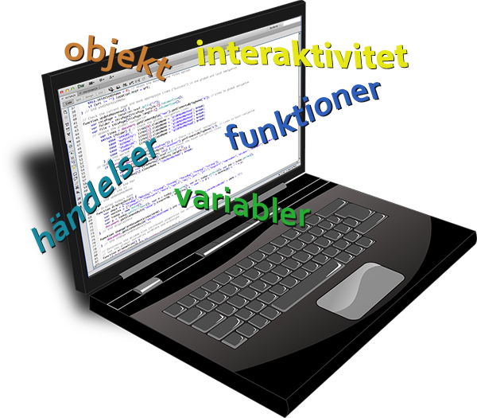
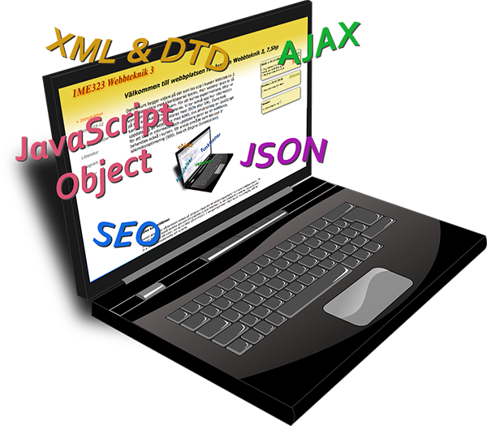

Välkommen till min webbplats där jag samlar mina resurser i webbteknik. I framtiden kanske det även blir annat.
WT1 — Webbteknik 1
Grundkurs i webbutveckling med HTML och CSS.
Förkunskapskrav: endast grundläggande behörighet
WT2 — Webbteknik 2
Grundkurs i interaktivitet på webbsidor med JavaScript.
Förkunskapskrav: WT1
WT3 — Webbteknik 3
Fortsättningskurs - strukturering, objekt och dynamisk uppdatering med bl.a. XML, JSON, AJAX, JavaScript. Även ett avsnitt om sökmotoroptimering, SEO.
Förkunskapskrav: WT1 och WT2
JavaScript — Introduktion genom exempel
Exempelsamling som ger en introduktion till programmering i JavaScript med fokus på interaktion på webbsidor.
Länkar
Länkar till webbsidor och resurser som är användbara för webbutvecklare.
Specialtecken
Tabell med namn på olika specialtecken samt kode och tangentkombinationer, för att få fram dem.